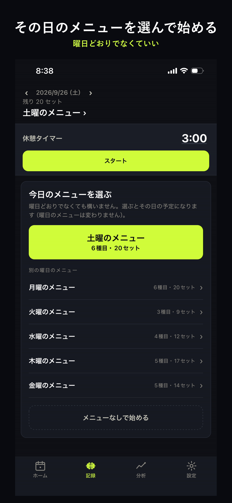
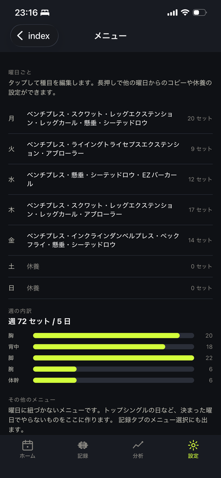
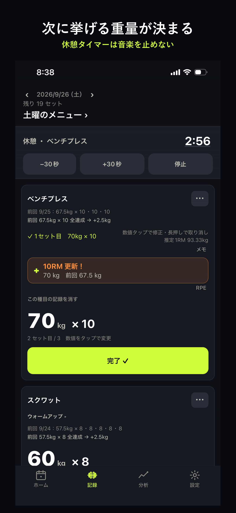

Plustra+
最初の5分でやっておくと、あとがずっと楽になることが3つあります。順番にどうぞ。
設定 → プロフィール
性別・体重・身長と、トレーニングを始めた時期を入れます。
体重は後から変えられます。入れなくてもアプリは普通に使えますが、分析の面白い部分が出てきません。
設定 → 種目の追加・編集
最初はベンチプレス・スクワット・デッドリフトの3つだけ入っています。「＋ 種目を追加」から、よく使う種目を足してください。46種目のプリセットがあるので、名前を選ぶだけで入ります。
種目ごとに、こう決められます。
ここがこのアプリの肝です。「5回×3セットできたら +2.5kg」のような進め方を種目ごとに決めておくと、あとはアプリが次の重量を出し続けます。

設定 → メニュー
月曜は胸、火曜は脚、というふうに曜日ごとの内容を決めておきます。決めてしまえば、その日は記録タブを開くだけで、やる種目が順番に並びます。

記録タブを開くと、その日の種目が並び、次に挙げる重量がすでに入力欄に入っています。重さと回数を確かめて「完了」を押すだけです。

設定 → データのバックアップ
記録はこの端末の中だけにあります。サーバーには送っていません。安全ですが、端末を無くすと記録も一緒に無くなります。
ときどき「書き出す（共有）」でファイルに書き出して、iCloud Drive に置いておいてください。機種変更のときは、そのファイルを読み込むだけで全部戻ります。
アプリを入れ直すと、記録は消えます。入れ直す前には必ず書き出してください。
記録・次の重量の提案・休憩タイマー・メニュー・自己ベスト・5×5の重量表は、ずっと無料です。回数の制限もありません。
5×5 プログラム、長い期間の分析、期間の自由な指定、グラフのピンチ操作、週1回の自動バックアップです。月額ではなく1回きりの購入で、ファミリー共有にも対応しています。
記録画面には出しません。セットの合間に広告が出るアプリでトレーニングしたくないので、そう決めています。